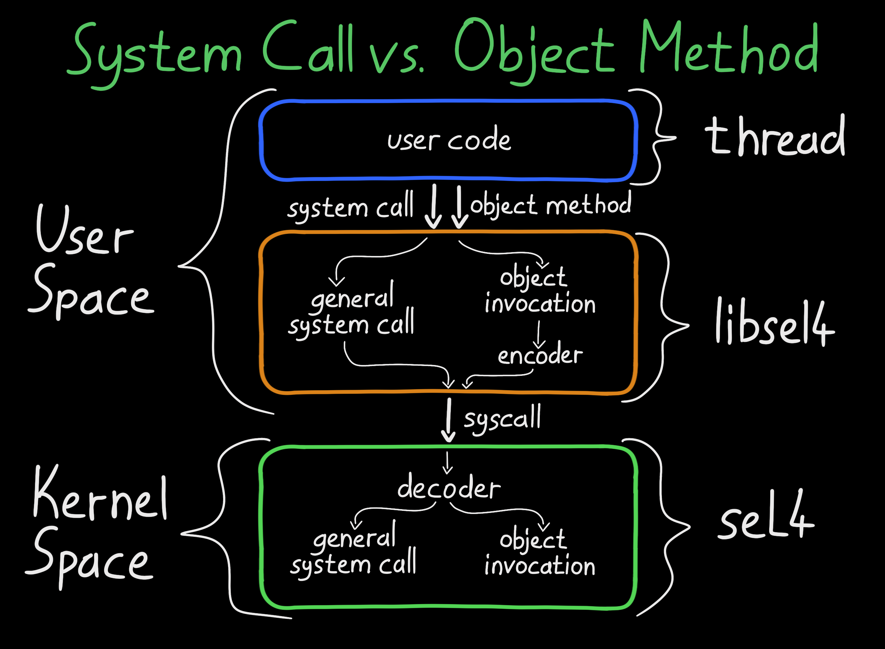

seL4 Microkernel: Architecture
The balance between safety and security versus high-performance and high-throughput has always been a challenge in OS design. Modern hardware allows separating trusted software from normal ones (e.g., user/kernel space, EL). The trade-off is the communication cost. It requires context switches, which are undesirable in high-performance systems.
 Hardware Seperation Between User and Kernel Space
Hardware Seperation Between User and Kernel Space
This trade-off led to monolithic kernels, where high-performance software (e.g., drivers) resides in the trusted world. However, this increases safety and security risks. If the software fails, the entire system goes with it. Microkernels, on the other hand, minimizes the software in the trusted world, only including essential software like the scheduler and MMU configuration. This enhances system safety as small, verifiable code is easier to validate. However, performance may suffer.
 Comparing Kernel Designs: Monolithic and Micro
Comparing Kernel Designs: Monolithic and Micro
seL4 is a fast, secure and formally verified microkernel operating system with fine-grained access control and support for virtual machines. It is the world’s fastest microkernel, balancing both security and performance. How this balance is achieved is a feat of software system design and engineering.
In this series I will be going over the mechanisms that allow safe, secure and high-performance systems to be built with seL4 at the center. Refer to the white paper for a detailed understanding of the project’s background, objectives, and real-world applications.
Abstractions
 seL4 Abstractions (a.k.a Services)
seL4 Abstractions (a.k.a Services)
The seL4 acts as a hardware abstraction layer for the software running in the normal world. These abstractions are backed by well-designed, secure, yet simple mechanisms. You are probably already familiar with some of them.
- Capabilities
- Threads
- Address Spaces
- Untyped
- Inter-process Communication
- Interrupts
Each abstraction and their mechanisms will be explored in the next parts.
System Calls
seL4 General System Calls
Traditional monolithic kernels provide abstractions (services) through system calls. For instance, to create a folder in Linux, you invoke the mkdir system call with its unique syscall number 83.
In that traditional sense, seL4 only has 11 system calls that you can invoke with a syscall number. Logically though, there is only 3.
- seL4_Send
- seL4_Recv
- seL4_Yield
The rest of the system calls are variations of those system calls (e.g., seL4_ReplyRecv = seL4_Send + seL4_Recv). However, for optimization, the variations are also implemented as system calls.
The seL4_Yield system call is unique because it doesn’t invoke an object (explained later) and isn’t a variation of seL4_Send or seL4_Recv.
Kernel Objects
seL4 Kernel Objects
Unlike mainstream kernels, seL4’s interface to its abstractions (services) is via kernel object invocations, not system calls. This is a crucial design & implementation difference.
The kernel’s interface to these objects (via system calls seL4_Send and seL4_Recv) forms the kernel’s interface. Kernel abstractions (services) are created, manipulated, and combined using these kernel objects:
- CNodes
- Thread Control Blocks
- Endpoints
- Reply Objects
- Notification Objects
- Virtual Address Space Objects
- Interrupt Objects
- Untyped Memory
- Architecture-Specific Objects
To protect kernel objects, seL4 uses capabilities and the system’s MMU. The kernel marks each object’s memory region as ‘protected’ on the MMU for kernel ownership, while capabilities are used for access control in the kernel.
Capabilities and other kernel object will be explored in the next writings.
Object Methods
 seL4 Object Methods (a.k.a. Invocations)
seL4 Object Methods (a.k.a. Invocations)
Kernel abstractions (services) are provided by invocations to kernel objects. This mechanism is simply called object methods.
The kernel object methods, implemented by the kernel, define what you can do with the kernel object. Capabilities are also used for access control.
Each object method is actually either seL4_Send or seL4_Recv on a certain kernel object. When you call the seL4_TCB_Set_Priority object method on a TCB kernel object, you’re actually calling seL4_Send and seL4_Recv on it.
The object methods in seL4 are implemented differently from system calls. They don’t have unique syscall numbers. Instead, there’s a decoder that uses a numbering system similar to syscalls to determine which capability to invoke on which kernel object.
 Relationship Between System Calls And Object Methods
Kernel Memory Allocation
 seL4 Object Retyping And Capability Deviation Tree (CDT)
seL4 Object Retyping And Capability Deviation Tree (CDT)
Unlike other mainstream kernels, seL4 does not use any dynamic memory allocation. Everything it needs is pre-allocated during boot (e.g., data, code, stack) and remains fixed. This helps with predictability and in turn stability of the kernel.
However, the kernel must track the abstractions (services) it provides. seL4 cleverly implements this functionality inside the kernel objects.
When the user space creates a kernel object via seL4_Untyped_Retype, seL4 adds additional information to the retyped object. By placing the required book-tracking information in kernel objects, seL4 avoids dynamic memory allocation.
Init Task
seL4 Simplified Booting, Initial Task And The BootInfo Structure
seL4 follows a “no-policy” design approach by providing only the mechanisms for enforcing security and access control, but it doesn’t impose specific policies on their use. The responsibility, however, must be given to someone and that is the init task (a.k.a. root task).
After the seL4 kernel boots, an initial thread is created and all system resources (e.g., untyped memory, interrupt control) are given to it in a well-defined way. It is then the responsibility of this task to set up the normal world such as drivers, filesystems and system services.
Since seL4 lacks storage drivers and filesystems, loading the init task from a disk is impossible. To resolve this, both the seL4 kernel and the init task are either loaded by the elfloader in ARM & RISCV or by the Second Stage Loader in x86.
After starting the init task, seL4 begins operating. What happens next is totally up to you!

Thanks for reading & Take care ❤
Follow me on X (formerly Twitter), if you like my works that is >.<